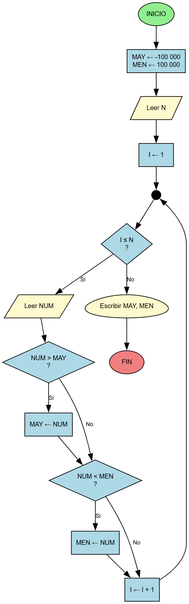

Enunciado del Problema
Construya un diagrama de flujo tal que dado N números enteros como dato, calcule el mayor y el menor de estos números.
Datos:
N, NUM1, NUM2, . . ., NUMN
Donde:
- N es una variable de tipo entero que indica el número de enteros que se ingresan.
- NUMi es una variable de tipo entero que representa el número i que se ingresa (1 ≤ i ≤ N).
Explicación de las Variables
- I: Variable de tipo entero. Representa la variable de control del ciclo.
- N y NUM: Variables de tipo entero.
- MAY: Variable de tipo entero. Almacena el máximo valor. Se inicializa con un valor negativo alto para que tome el valor del primer número que se ingresa.
- MEN: Variable de tipo entero. Almacena el mínimo valor. Se inicializa con un valor alto para que tome el valor del primer número que se ingresa.
Diagrama de Flujo

El diagrama muestra una estructura repetitiva que itera N veces para encontrar el mayor y menor número.
Tabla de Seguimiento
A continuación presentamos el seguimiento del algoritmo para una corrida con N = 12:
| I |
N |
NUM |
MAY |
MEN |
| 1 |
12 |
|
-100 000 |
100 000 |
| 2 |
|
170 |
170 |
170 |
| 3 |
|
44 |
|
44 |
| 4 |
|
815 |
815 |
|
| 5 |
|
1700 |
1700 |
|
| 6 |
|
38 |
|
38 |
| 7 |
|
140 |
|
|
| 8 |
|
380 |
|
|
| 9 |
|
1020 |
|
|
| 10 |
|
116 |
|
|
| 11 |
|
14 |
|
14 |
| 12 |
|
730 |
|
|
| 13 |
|
960 |
|
|
Las celdas sombreadas expresan valores que se imprimen.
Código Fuente
package com.tutortics;
// src/problema_3.6.java
import java.util.Scanner;
import java.util.Arrays;
public class problema_3_6 {
/**
* Encuentra el número mayor y menor en un arreglo de enteros.
*
* @param numeros El arreglo de números a procesar.
* @return Un arreglo de dos enteros donde la posición 0 es el MAYOR y la 1 es el MENOR.
* Retorna null si el arreglo de entrada es nulo o está vacío.
*/
public int[] encontrarMayorMenor(int[] numeros) {
if (numeros == null || numeros.length == 0) {
return null; // No se puede procesar un arreglo vacío
}
int mayor = Integer.MIN_VALUE; // Inicializa con el valor más pequeño posible
int menor = Integer.MAX_VALUE; // Inicializa con el valor más grande posible
// Estructura Repetitiva (Ciclo)
for (int num : numeros) {
// ¿NUM > MAY?
if (num > mayor) {
mayor = num;
}
// ¿NUM < MEN?
if (num < menor) {
menor = num;
}
}
return new int[]{mayor, menor};
}
/**
* Método principal para la interacción con el usuario.
*/
public static void main(String[] args) {
Scanner scanner = new Scanner(System.in);
problema_3_6 buscador = new problema_3_6();
System.out.println("Introduce la cantidad de números a ingresar (N):");
int n = scanner.nextInt();
if (n <= 0) {
System.out.println("Por favor, introduce un número positivo.");
} else {
int[] numerosIngresados = new int[n];
System.out.println("Introduce los " + n + " números:");
for (int i = 0; i < n; i++) {
numerosIngresados[i] = scanner.nextInt();
}
int[] resultado = buscador.encontrarMayorMenor(numerosIngresados);
if (resultado != null) {
System.out.println("===================================");
System.out.println("El número MAYOR es: " + resultado[0]);
System.out.println("El número MENOR es: " + resultado[1]);
System.out.println("===================================");
}
}
scanner.close();
}
}
Resultados de las Pruebas
testEncontrarMayorMenorNullOEmpty
0.079 s
testEncontrarMayorMenorNormal
0.01 s